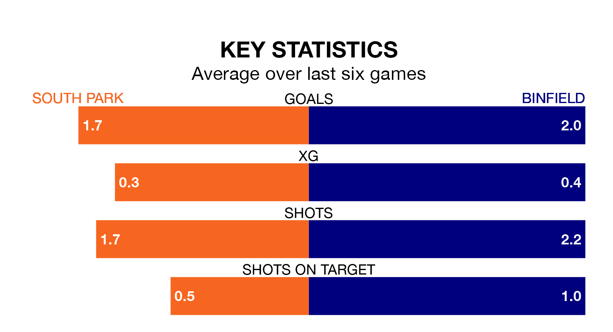

Binfield travel to South Park on Saturday in the Isthmian League Division One South Central.
The visitors come into the game on the back of a draw in their last match, having tied with Uxbridge 2-2 away.
South Park, meanwhile, won their last match, 2-0 against Corinthian-Casuals.
Binfield are 20th in the table after 26 games, of which they have won three and drawn six, earning 15 points.
South Park are 11 places ahead of the away team in ninth, with 11 wins and six draws putting them on 39 points.
With 28 goals in 26 games so far this season, Binfield are the league's second-lowest scorers with 1.1 goals per game. And they are conceding more than average, letting in 88 goals at a rate of 3.4 per game.
The hosts, meanwhile, are above average scorers, with 1.8 goals per game, compared to a league average of 1.7. They have conceded 1.5 goals per game.
In the last five years, South Park and Binfield have played each other on four occasions. South Park won one of them, Binfield two, and they drew once.
On average, South Park scored 2.0 goals and Binfield 2.2 in those matches.
Their last meeting was on March 28, when Binfield won 4-2 at home.
South Park are in mixed form in the Isthmian League Division One South Central, with two wins and two draws from their last six games.
With three wins and two draws over that period, Binfield's form is better – they have taken 11 points from 18, compared to South Park's eight.
Updated: 12:06 (UTC), 15/02/24